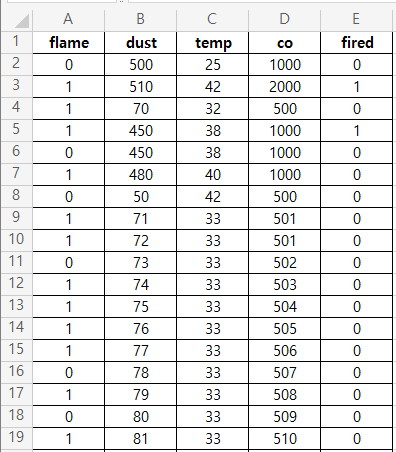

AI 모델 생성 - 센서값으로 화재 여부 판단하는 AI 학습
데이터 준비
AI 모델 생성에 가장 중요한 것은 데이터!
인간의 데이터를 AI에게 학습시킨 결과물이 AI 모델이다.
이렇게 학습된 AI 모델에게, 새로운 자료를 주면 기존 데이터를 기반으로 결과를 예측한다.

기존 데이터를 다시 열어 보며 잘못된 데이터가 있거나 누락된 데이터가 있으면 그 행은 삭제하거나 평균값으로 채워넣는다.
AI 학습
준비된 데이터를 AI 학습해 AI 모델로 만드는 것은 파이썬 프로그래밍에 의해 실행한다.
파이썬 코드를 이용해 파일을 읽어들이고, 머신러닝 기법을 이용해 AI 학습한다. 이 결과로 나오는 것이 AI 모델이다.
AI 사용
이렇게 학습된 AI 모델은 하나의 파일로 저장할 수 있다.
이 AI 모델 파일을 이용해 C/C++, 파이썬, 자바, 자바스크립트 등의 프로그래밍 언어에서 읽어들인후 새로운 센서값이 들어올 때마다 값을 넘겨 줘서 센서의 값들이 이런 상태라면 진짜로 불이 난건지 여부를 예측하게 할 수 있다.
예를 들어, 센서로 부터
- flame: 1(불꽃 감지됨)
- dust: 79(미세먼지의 양)
- temp: 71(온도)
- co: 2007(일산화탄소)
의 값이 감지되면 이 값을 학습된 AI 모델에게 넘겨줘 화재 여부를 판단하게 한다.
이렇게 센서의 값을 AI 모델에게 넘겨주고 그 판단 결과를 받아오는 것에도 C/C++, 파이썬, 자바, 자바스크립트 등의 프로그래밍 언어가 사용된다.